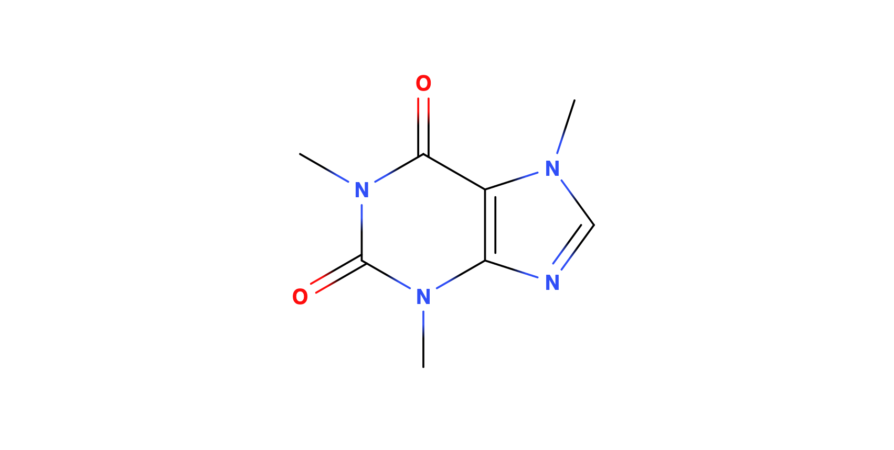

Cheesemaking
This question is about cheese, a type of dairy product.
Name two types of cheese
2Which of these cheeses is a runny cheese?
- Brie
- Cheddar
- Stilton
- Feta
What makes some cheese runny?
4How is cheese made?
16A supermarket is made of bricks
What is a brick?
3Where do bricks come from?
3Complete the diagram to show the Flemish Bond bricklaying pattern.
1Brick based construction needs to adhere to many commonplace rules found in the construction industry.
- Bricks must be level
- No brick goes unused
- Mortar must be up to specification
Complete the table below.
| Type | Colour | Usage |
|---|---|---|
| clay | ||
| grey | industrial | |
| kiln making |
Lettering
It is often said that lettering (often known as calligraphy) is the one true artform known to us which cannot be mastered by robots.
Complete the table below with appropriate letters in your best cursive, without drawing between the boxes provided
| Letters A to H | ||||||||
|---|---|---|---|---|---|---|---|---|
| Numbers 0 to 7 |
Robot Uprisings
Examine the following code listing:
from objects import Human
from random import random
def love(object):
if type(object) == Human:
return False
else:
return random <= 0.10
What is wrong with this code?
2Another aspect of life where robots are deficient is typing on keyboards. It is unlikely that we will see robot typists in our lifetimes.
Shown below is the central part of a keyboard using the
QWERTY layout:
Highlight the keys which make up the set of home keys.
4Robots are formidable adversaries. One of their few weaknesses is their exoskeleton. Unless this is oiled and cleaned regularly the robot will go rusty and fall apart.
Robots can be easily fooled into cleaning themselves with dangerous chemicals, rendering the robot inert. Below is shown such a chemical:
Highlight the active bonds in this compound.
2How many pointing bonds are there in this compound?
- None
- 1
- 3
Describe the Diels Adler process of robot distillation.
8